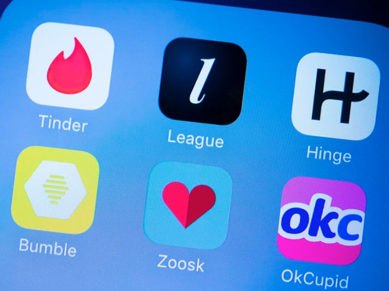
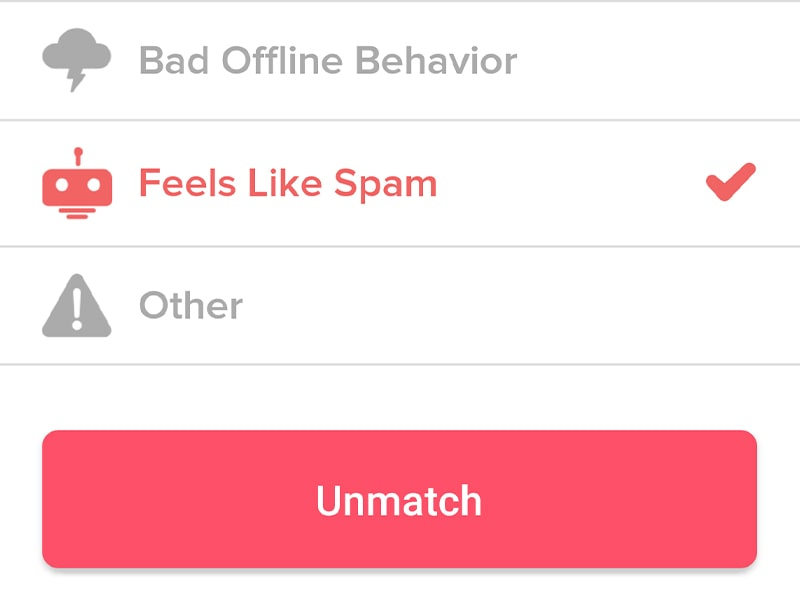
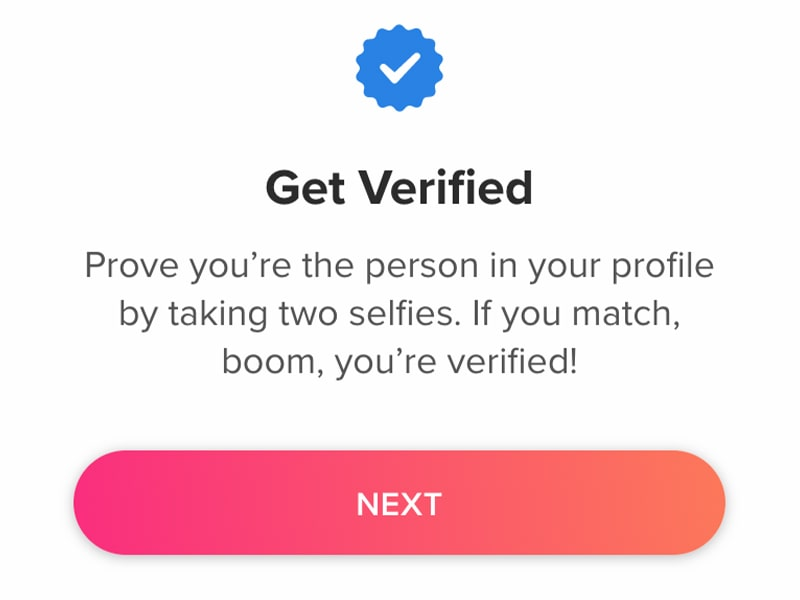
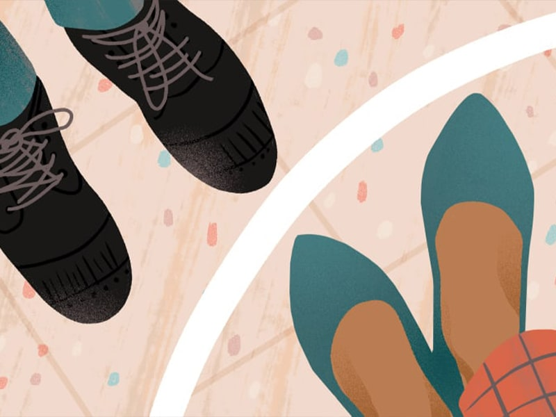

With all the articles I have written about singlehood, I could probably become a guide at this point! Not desperate, y'all. Not even a bit, but desperate to not get tied down. Anyway, let me begin by saying, I won’t be dissing any of the dating apps because the efforts that went into creating them need to be respected. Moreover, the developers aren’t the ones who made dating apps crappy (if that is your belief). It is the people you encountered who have made this experience of yours, sour. There are many people out there who actually met ‘THE ONE’ on these apps, and it is not a joke. There are others who are in a solid relationship because dating apps actually serve their purpose! Hence, there will be no dissing here.
So, why am I writing this article? Well, many of my friends find this path of dating quite treacherous, and rightly so. This one is for you guys, who made me expand my boundaries. You know who y’all are (ILY).

I initially joined a dating app out of curiosity, because many of my friends were on it and I wanted to know what the allure was all about and because it was in trend. For someone who is not into dating, I lasted for a whole week! But hey, I kept coming back. So, I am not a noob who is spewing balderdash in this blog. I do partially blame the lockdown and random 3 AM conversations, though.
Every time I joined an app, I met at least two people who creeped the hell out of me. It is not just me, but various others who faced this. I mean obviously, you can pretend to be whoever you want to be over social media and no one will question you. Hell, I could even pretend to be Ariana's sixth bi..., you get the point! But, there are boundaries that need to be preserved and respected.
What do I mean by creepy? The kind of people who either start being extremely inappropriate. For example, those who go on making you sexually uncomfortable even after you tell them a no. The kind who are not going to let you off the hook until you give them all of your social media handle details, the stalker kind. Please exercise your right to use the unmatch button when you start feeling uncomfortable!

Oh and if they are violating any rules, go ahead and report them! You should put your safety before anything and ensure you are saving others from the trouble that will entail them. Ultimately, the power resides in you. You determine who you want to continue a conversation with and with who you would rather never cross paths, for the rest of your life (however dramatic that may sound).
Then there are those people who try to be ‘friends’ with you. For real, their bios read ‘need a friend’. Oh and the best in this category are the people who openly admit they are in a committed relationship and are merely looking for friends. I mean, they kind of got social networking apps and dating apps mixed up or it is just a trick from the old book because they can NOT stop flirting for the love of everything holy.
Safe to say these were not the people who made dating apps fun for me. Even if it were after severe googling, there are several people who intend to make a lasting impression by using the cheesiest pickup lines ever! And kudos to their efforts. They're getting what they came for: attention! And they're getting it as we speak. You also end up finding people who share the same interests as you do and you actually manage to hold proper conversations! Also, it may lead to something more *wink wink*. And if it doesn’t work out, you can always try next time!
Now, how to make these apps all rainbows and sunshine and not a creepy hell hole, where you just see nothing but darkness?
For starters, verify your account. That way, the person is sure you are not someone with a fake profile, and there are TONS of fake profiles, which is just sad. There are people who are out there looking for companionship and this is just a cruel trick and morally wrong, too. You can play your games elsewhere, but not mess with the person who is genuinely interested or serious. Actually, don’t play these games anywhere! It is WRONG to catfish others.

I have already mentioned this, but I cannot stop myself from repeating, because this is extremely important. RESPECT BOUNDARIES. If you are looking for hookups, great! That is your choice. But, you cannot force someone into wanting what you want. You cannot threaten them into it, or low-key make them sway in that direction. If the other person says no, it clearly means NO. Sorry bud, you ain't getting what you wanted. Deal with it! You are not supposed to push those boundaries. Similarly, if someone is not looking for anything serious, don’t push them to feel so, or guilt-trip them into feeling they owe you something because that is just low. Instead, be frank about what you are seeking right from the beginning rather than tagging them along for a ride that will possibly end-up in disappointment.

The first time I joined a dating app, I lasted for a whole week. Oddly enough, the reason I deleted my account wasn’t because someone creeped me out on the app or something along those lines. It was because of the people I met every day, that I had to leave the apps. Apparently, being on these apps allows others to assassinate your character, which is totally wrong. I do not get the point as to why being on a dating app would possibly mean that the person is up to no good. I mean, if they do end up finding you on the app, it means, they are on it too. So, that is majorly hypocritical.
Back then, and being in college, before lockdown, it did start a frenzy of gossip and talks which definitely did not bode well with my mental health and I might have chosen a simpler option than retaliating. After extreme contemplation, I realized it wasn’t right to be a coward, and I was back on other dating apps. But, this time, I did not quit because of some random talk, but because it is not something I wanted, and obviously I found much solace in that.
When I spoke to others, I realized how several of my girlfriends hesitate to join these apps for the same reason and that blows! It is not right to use this as a medium of judging or questioning a person’s morals. It is incredibly dimwitted, in my opinion. And if you ever wondered why the ratio of girls to boys is less on these apps, it is because of this. I mean, this is just an evolved version of matrimonial sites. Instead of letting your parents find you a person to get married to, you find someone whose frequency matches with yours and well, there are several added benefits, I am sure. So please, quit being judgemental and hypocritical, because that sucks and kindly get a life.
Finally, do what your heart pleases and always remember, you and your security matter the most.
Until next time, keep swiping!
Wishing you lots of love and happiness this new year,
M.